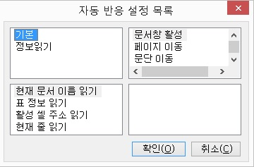

자동 반응 설정에서 지원하는 한글 이벤트는 다음과 같습니다.

한글 문서창으로 활성이 변경된 경우 발생합니다.
<Alt-Pgup>, <Alt-Pgdn> 키를 사용해 페이지를 이동한 경우 발생합니다.
<Ctrl-Up>, <Ctrl-Down> 키를 사용하여 문단을 이동한 경우 발생합니다.
<위 화살표>, <아래 화살표>, <Pgup>, <Pgdn>, <Ctrl-Home>, <Ctrl-End> 등의 키를 사용해 줄 단위의 이동이 있는 경우 발생합니다.
<Ctrl-좌화살표>, <Ctrl-우화살표> 키를 사용해 단어 이동한 경우 발생합니다.
<좌화살표>, <우화살표>, <Home>, <End> 등의 키를 사용해 글자 단위로 이동한 경우 발생합니다.
표 내에서 <Tab>, <Shift-Tab> 키를 사용해 셀 이동한 경우 발생합니다.
<Insert> 키를 사용해 수정/삽입 모드를 변경한 경우 발생합니다.
선택영역이 변경된 경우 발생합니다.
센스리더는 한글에 대해 다음의 기능들을 지원합니다. 여기에 나열된 기능들은 자동 반응 설정이나 키 반응 설정에서 연결
기능으로 지정되어야 실제 동작을 하게 됩니다.
[] 현재 문서 이름 읽기
활성된 문서의 이름(파일이름)을 읽어줍니다.
[] 이전 글자 읽기
현재 캐럿 위치의 이전 글자를 읽어줍니다.
[] 현재 글자 읽기
현재 캐럿 위치의 글자를 읽어줍니다.
[] 다음 글자 읽기
현재 캐럿 위치의 다음 글자를 읽어줍니다.
[] 이전 단어 읽기
현재 캐럿 위치의 이전 단어를 읽어줍니다.
[] 현재 단어 읽기
현재 캐럿 위치의 단어를 읽어줍니다.
[] 다음 단어 읽기
현재 캐럿 위치의 다음 단어를 읽어줍니다.
[] 이전 줄 읽기
현재 캐럿 위치의 이전 줄을 읽어줍니다.
[] 현재 줄 읽기
현재 캐럿 위치의 줄을 읽어줍니다.
-- 세부 옵션 --
1) 빈줄 메세지 알림: 이옵션이 선택되었을경우 내용이 없으면 "빈줄" 이라고 알려줍니다.
2) 읽기방법: 캐럿을 중심으로 전체, 오른쪽, 왼쪽,단어를 선택할 수 있습니다.
[] 다음 줄 읽기
현재 캐럿 위치의 다음 줄을 읽어줍니다.
[] 이전 문단 읽기
현재 캐럿 위치의 이전 문단을 읽어줍니다.
[] 현재 문단 읽기
현재 캐럿 위치의 문단을 읽어줍니다.
[] 다음 문단 읽기
현재 캐럿 위치의 다음 문단을 읽어줍니다.
[] 활성 셀 주소 읽기
캐럿이 테이블 내에 있는 경우 현재 셀 위치를 읽어줍니다.
-- 세부 옵션 --
1) 읽기 방식: 행열 방식으로 읽을지 A1방식으로 읽을지 선택합니다.
2) 읽기 종류: 행만 읽을지, 열만 읽을지, 모두 읽을지를 선택합니다.
3) 셀 총 수 읽기: 행, 열의 총 개수를 읽어줄지 여부를 선택합니다.
[] 활성 셀 주소 변경 읽기
이전 위치와 비교하여 셀이 변경된 경우 셀 주소를 읽어줍니다.
-- 세부 옵션 --
1) 읽기 방식: 행열 방식으로 읽을지 A1방식으로 읽을지 선택합니다.
2) 읽기 종류: 행만 읽을지, 열만 읽을지, 모두 읽을지를 선택합니다.
3) 셀 총 수 읽기: 행, 열의 총 개수를 읽어줄지 여부를 선택합니다.
[] 활성 셀 내용 읽기
캐럿이 테이블에 있을 경우 현재 셀 전체 내용을 읽어줍니다.
-- 세부 옵션 --
1) 빈셀 알림: 셀 내용이 없는 경우 "빈셀"이라 알려줄지 여부를 선택합니다.
[] 행 제목 읽기
현재 표의 가장 처음 행 내용을 읽어줍니다.
[] 열 제목 읽기
현재 표의 가장 처음 열 내용을 읽어줍니다.
[] 행 읽기
현재 행의 셀들을 차례로 읽어줍니다.
-- 세부 옵션 --
1) 빈셀 알림: 셀에 내용이 없을 경우 "빈셀"이라 알려줄지 여부를 선택합니다.
2) 읽기 범위: 읽기 원하는 셀의 범위를 선택합니다. 전체, 현재 셀까지, 현재 셀부터의 세 가지 옵션이 있습니다.
[] 열 읽기
현재 열의 셀들을 차례로 읽어줍니다.
-- 세부 옵션 --
1) 빈셀 알림: 셀에 내용이 없을 경우 "빈셀"이라 알려줄지 여부를 선택합니다.
2) 읽기 범위: 읽기 원하는 셀의 범위를 선택합니다. 전체, 현재 셀까지, 현재 셀부터의 세 가지 옵션이 있습니다.
[] 가상 셀 주소 읽기
캐럿이 테이블 내에 있는 경우 가상 셀의 위치를 읽어줍니다.
-- 세부 옵션 --
1) 읽기 방식: 행열 방식으로 읽을지 A1방식으로 읽을지 선택합니다.
2) 읽기 종류: 행만 읽을지, 열만 읽을지, 모두 읽을지를 선택합니다.
3) 전체 개수 읽기: 행, 열의 총 개수를 읽어줄지 여부를 선택합니다.
[] 가상 셀 내용 읽기
캐럿이 테이블에 있을 경우 가상 셀의 전체 내용을 읽어줍니다.
-- 세부 옵션 --
1) 빈셀 알림: 셀 내용이 없는 경우 "빈셀"이라 알려줄지 여부를 선택합니다.
[] 가상 셀 왼쪽으로 이동
가상 셀을 왼쪽으로 한 셀 이동합니다.
[] 가상 셀 위로 이동
가상 셀을 위로 한 셀 이동합니다.
[] 가상 셀 오른쪽으로 이동
가상 셀을 오른쪽으로 한 셀 이동합니다.
[] 가상 셀 아래로 이동
가상 셀을 아래로 한 셀 이동합니다.
[] 가상 셀 행 처음으로 이동
가상 셀 포인터를 행의 처음 셀로 이동합니다.
[] 가상 셀 행 끝으로 이동
가상 셀 포인터를 행의 마지막 셀로 이동합니다.
[] 가상 셀 열 처음으로 이동
가상 셀 포인터를 열의 처음 셀로 이동합니다.
[] 가상 셀 열 끝으로 이동
가상 셀 포인터를 열의 마지막 셀로 이동합니다.
[] 활성 셀을 가상 셀로 이동
가상 셀 포인터 위치로 캐럿을 이동합니다.
[] 가상 셀을 활성 셀로 이동
가상 셀 포인터를 캐럿이 있는 셀 위치로 이동합니다.
[] 편집모드 읽기
현재 상태가 삽입모드인지 삭제 모드인지를 알려줍니다.
[] 글꼴 읽기
현재 캐럿 위치 글자의 글꼴 정보를 읽어줍니다.
-- 세부 옵션 --
1) 글꼴 이름 읽기: 글꼴 이름을 읽을지 선택합니다.
2) 글꼴 크기 읽기: 글꼴 크기를 읽을지 선택합니다.
3) 글꼴 색 읽기: 글꼴의 색상을 읽을지 선택합니다.
4) 글꼴 스타일 읽기: 글꼴의 스타일(굵게, 기울임)정보를 읽을지 선택합니다.
5) 볼록/오목 읽기: 볼록/오목 상태를 읽을지 선택합니다.
6) 위/아래 첨자 읽기: 위/아래 첨자 상태를 읽을지 선택합니다.
7) 밑줄 읽기: 밑줄 지정 여부를 읽을지 선택합니다.
8) 그림자 읽기: 그림자 지정 여부를 읽을지 선택합니다.
[] 단 정보 읽기
현재 단의 번호를 읽어줍니다.
[] 단 정보 변경 읽기
단 위치가 변경되면 단 번호를 읽어줍니다.
[] 페이지 정보 읽기
현재 페이지 번호를 읽어줍니다.
-- 세부 옵션 --
1) 페이지 총 수 읽기: 페이지 총 수를 포함할지 선택합니다.
[] 페이지 정보 변경 읽기
페이지가 바뀐 경우 현재 페이지 번호를 읽어줍니다.
-- 세부 옵션 --
1) 페이지 총 수 읽기: 페이지 총 수를 포함할지 선택합니다.
[] 구역 정보 읽기
현재 구역 번호를 읽어줍니다.
-- 세부 옵션 --
1) 구역 총 수 읽기: 구역 총 수를 포함할지 선택합니다.
[] 구역 정보 변경 읽기
구역이 바뀌면 현재 구역 번호를 읽어줍니다.
-- 세부 옵션 --
1) 구역 총 수 읽기: 구역 총 수를 포함할지 선택합니다.
[] 표 정보 읽기
캐럿이 있는 표의 제목, 크기 등의 표 정보를 출력합니다.
[] 표 정보 변경 읽기
표 안에 진입했을 때 표 정보를, 표에서 벗어났을 때 "표 종료"라고 출력합니다.
[] 선택 영역 읽기
선택 영역의 내용을 출력합니다.
[] 선택 영역 변경 읽기
선택 영역이 변경되면 변경된 내용을 출력합니다.
[] 개체 개수 읽기
현재 줄에 있는 개체의 종류와 개수를 출력합니다.
[] 개체 종류 읽기
캐럿 위치의 개체 종류를 출력합니다.
센스리더는 HWP 파일의 활용을 위한 다음의 단축키들을 제공합니다.
여기에 정의된 단축키들은 전체 지원 기능 중에서 필수적인 기능들만을 선별하여 단축키로 정의한 것이며, 사용자들은 필요에 따라 원하는 기능을 단축키로 정의하여 사용할 수 있습니다.
기능 설명 중 | 기호는 해당 단축키를 반복해서 누를 때 실행되는 기능을 의미합니다.
1. Ctrl-Shift-B
선택 영역 읽기
2. Ctrl-Shift-F
활성 셀 내용 읽기, 활성 셀 주소 읽기 | 페이지 정보 읽기 | 현재 문서 이름 읽기
3. Ctrl-Alt-Enter
활성 셀을 가상 셀로 이동, 활성 셀 내용 읽기, 활성 셀 주소 읽기
4. Shift-Alt-C
열 제목 읽기
5. Shift-Alt-R
행 제목 읽기
6. Ctrl-Shift-Alt-Enter
가상 셀을 활성 셀로 이동, 가상 셀 내용 읽기, 가상 셀 주소 읽기
7. Ctrl-Shift-Alt-C
열 읽기
8. Ctrl-Shift-Alt-R
행 읽기
9. Ctrl-Shift-Alt-X
키 반응 설정 선택
10. Ctrl-Shift-Alt-Z
자동 반응 설정 선택
11. Ctrl-Shift-A
글꼴 읽기
12. Ctrl-Alt-왼쪽 방향키
가상 셀 왼쪽으로 이동, 가상 셀 내용 읽기, 가상 셀 주소 읽기
13. Ctrl-Alt-위 방향키
가상 셀 위로 이동, 가상 셀 내용 읽기, 가상 셀 주소 읽기
14. Ctrl-Alt-오른쪽 방향키
가상 셀 오른쪽으로 이동, 가상 셀 내용 읽기, 가상 셀 주소 읽기
15. Ctrl-Alt-아래 방향키
가상 셀 아래로 이동, 가상 셀 내용 읽기, 가상 셀 주소 읽기
16. Ctrl-Alt-Home
가상 셀 행 처음으로 이동, 가상 셀 내용 읽기, 가상 셀 주소 읽기
17. Ctrl-Alt-End
가상 셀 행 끝으로 이동, 가상 셀 내용 읽기, 가상 셀 주소 읽기
18. Ctrl-Alt-PGUP
가상 셀 열 처음으로 이동, 가상 셀 내용 읽기, 가상 셀 주소 읽기
19. Ctrl-Alt-PGDN
가상 셀 열 끝으로 이동, 가상 셀 내용 읽기, 가상 셀 주소 읽기